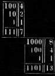

EXPLANATION OF BINARY ARITHMETIC[GM VII p223] SOURCE: Die mathematische schriften von Gottfried Wilheim Leibniz, vol. VII C. I. Gerhardt (ed) pp 223-227 The ordinary reckoning of arithmetic is done according to the progression of tens. Ten characters are used, which are 0, 1, 2, 3, 4, 5, 6, 7, 8, 9, which signify zero, one, and the successive numbers up to nine inclusively. And then, when reaching ten, one starts again, writing ten by "10", ten times ten, or a hundred, by "100", ten times a hundred, or a thousand, by "1000", ten times a thousand by "10000", and so on. But instead of the progression of tens, I have for many years used the simplest progression of all, which proceeds by twos, having found that it is useful for the perfection of [GM VII, p224] the science of numbers. Thus I use no other characters in it bar 0 and 1, and when reaching two, I start again. This is why two is here expressed by "10", and two times two, or four, by "100", two times four, or eight, by "1000", two times eight, or sixteen, by "10000", and so on. Here is the Table of Numbers of this way, which may be extended as far as is desired. Here, one glance makes evident the reason for a celebrated property of the geometric progression by twos in whole numbers, which holds that if one has only one of these numbers for each degree, one can compose from them all the other whole numbers below the double of the highest degree.  For here, it is as if one said, for example, that 111, or 7, is the sum of four, two, and one, and that 1101, or 13, is the sum of eight, four, and one. This property enables assayers to weigh all sorts of masses with few weights and could serve in coinage to give several values with few coins. Establishing this expression of numbers enables us to very easily make all sorts of operations. [GM VII, p225] And all these operations are so easy that there would never be any need to guess or try out anything, as has to be done in ordinary division. There would no longer be any need to learn anything by heart, as has to be done in ordinary reckoning, where one has to know, for example, that 6 and 7 taken together make 13, and that 5 multiplied by 3 gives 15, in accordance with the Table of one times one is one, which is called Pythagorean.1 But here, all of that is found and proved from the source, as is clear in the preceding examples under the signs and . However I am not in any way recommending this way of counting in order to introduce it in place of the ordinary practice of counting by ten. For, aside from the fact that we are accustomed to this, we have no need to learn what we have already learned by heart. The practice of counting by ten is shorter and the numbers not as long. And if we were accustomed to proceed by twelves or sixteens, there would be even more of an advantage. But reckoning by twos, that is, by 0 and 1, as compensation for its length, is the most fundamental way of reckoning for science, and offers up new discoveries, which are then found to be useful, even for the practice of numbers and especially for geometry. The reason for this is that, as numbers are reduced to the simplest principles, like 0 and 1, a wonderful order is apparent throughout. For example, in the Table of Numbers itself, it is clear in each column that it is ruled by cycles which always begin over again. In the first column this is 01, in the second 0011, in the third 00001111, in the fourth 0000000011111111, and so on. And little zeros have been put into the table to fill the gap at the beginning of the column, and to emphasize these cycles better. Also, lines have been drawn within the table, which show that what is contained within the lines always occurs again underneath them. And it even turns out that square numbers, cubic numbers, and other [GM VII, p226] powers, likewise triangular numbers, pyramidal numbers, and other figure numbers, have similar cycles, so that tables of them can be written immediately, without any calculation. And this one drawn-out task in the beginning, which then gives the means to make reckoning economical and to proceed to infinity by rule, is infinitely advantageous. What is amazing in this reckoning is that this arithmetic by 0 and 1 is found to contain the mystery of the lines of an ancient King and philosopher named Fuxi, who is believed to have lived more than 4000 years ago, and whom the Chinese regard as the founder of their empire and their sciences.2 There are several linear figures attributed to him, all of which come back to this arithmetic, but it is sufficient to give here the Figure of the Eight Cova, as it is called, which is said to be fundamental, and to join to them the explanation which is obvious, provided that one notices, firstly, that a whole line — means unity, or 1, and secondly, that a broken line -- means zero, or 0. The Chinese lost the meaning of the Cova or Lineations of Fuxi, perhaps more than a thousand years ago, and they have written commentaries on the subject in which they have sought I know not what far out meanings, so that their true explanation now has to come from Europeans. Here is how: It was scarcely more than two years ago that I sent to Reverend Father Bouvet,3 the celebrated French Jesuit who lives in Peking, my method of counting by 0 and 1, and nothing more was required to make him recognize that this was the key to the figures of Fuxi. Writing to me on 14 November 1701, he sent me this philosophical prince's grand figure, which goes up to 64, and leaves no further room to doubt the truth of our interpretation, such that it can be said that this Father has deciphered the enigma of Fuxi, with the help of what I had communicated to him. And as these figures are perhaps the most ancient monument of [GM VII, p227] science which exists in the world, this restitution of their meaning, after such a great interval of time, will seem all the more curious. The agreement between the figures of Fuxi and my Table of Numbers is more obvious when the initial zeros are provided in the Table; they seem superfluous, but they are useful to better show the cycles of the column, just as I have provided them in effect with little rings, to distinguish them from the necessary zeros. And this agreement leaves me with a high opinion of the depth of Fuxi's meditations, since what seems easy to us now was not so at all in those far-off times. The binary or dyadic arithmetic is, in effect, very easy today, with little thought required, since it is greatly assisted by our way of counting, from which, it seems, only the excess is removed. But this ordinary arithmetic by tens does not seem very old, and at least the Greeks and the Romans were ignorant of it, and were deprived of its advantages. It seems that Europe owes its introduction to Gerbert, who became Pope under the name of Sylvester II, who got it from the Moors of Spain.4 Now, as it is believed in China that Fuxi is even the author of Chinese characters, although they were greatly altered in subsequent times, his essay on arithmetic leads us to conclude that something considerable might even be found in these characters with regard to numbers and ideas, if one could discover the foundation of Chinese writing, all the more since it is believed in China that he had consideration for numbers when establishing them. Reverend Father Bouvet is strongly inclined to push this point, and very capable of succeeding in it in various ways. However, I do not know if there was ever an advantage in this Chinese writing similar to the one that there necessarily has to be in the Characteristic I project, which is that every reasoning derivable from notions could be derived from these notions' characters by a way of reckoning, which would be one of the more important means of assisting the human mind. NOTES: 1. Leibniz is here referring to the multiplication table. 2. A mythological figure, said to have lived in the 3rd millennium B.C.E. 3. Joachim Bouvet (1656-1730), a French Jesuit missionary who spent most of his adult life in China. He and Leibniz corresponded between 1697 and 1707. 4. In his 'Discourse on the natural theology of the Chinese' (1716), Leibniz repeated his claim that Gerbert (i.e. Gerbert d'Aurillac), who was pope from 999 to 1003, introduced the decimal system to Christian Europe. See Leibniz, Writings on China, trans. and ed. Daniel J. Cook and Henry Rosemont Jr. (Chicago: Open Court, 1994), p135. Leibniz's claim is mistaken; although Gerbert is traditionally believed to have introduced Arabic numerals to Christian Europe, he did not introduce the decimal system. © Lloyd Strickland 2007 |